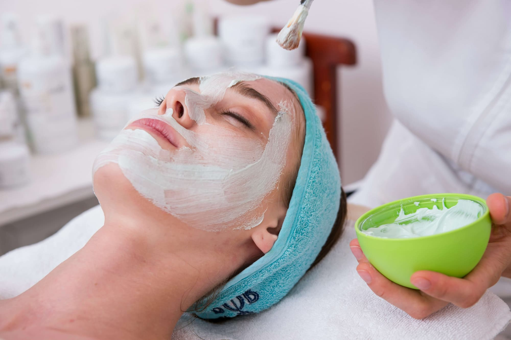
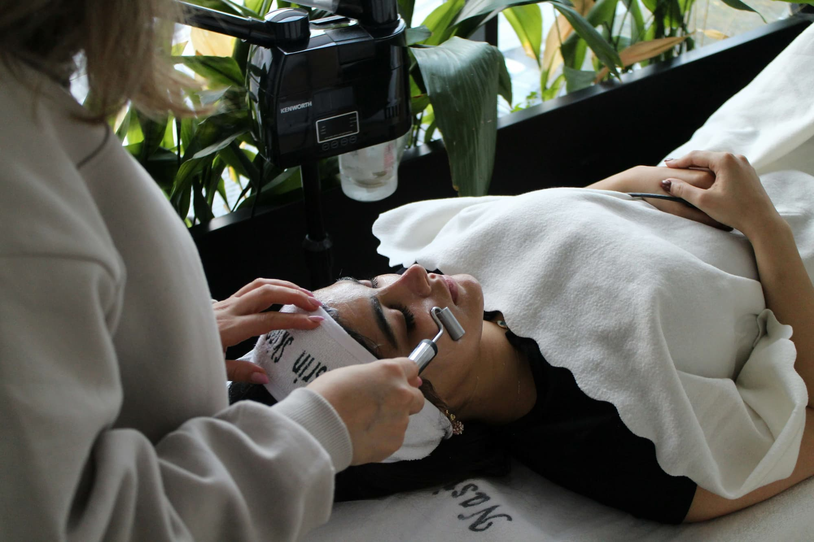
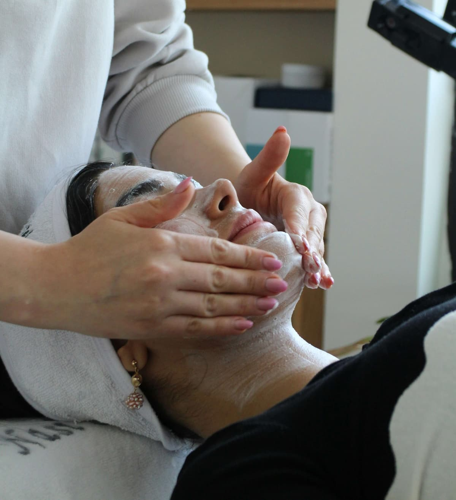

Bij Glow By Britt bieden onze gelaatsverzorgingen de perfecte mix van verzorging, ontspanning en doelgerichte huidzorg met Body&Bess, een 100% Belgisch skincaremerk dat natuurlijke verzorging combineert met actieve ingrediënten.
Body&Bess ontwikkelt doelgerichte producten voor verschillende huidbehoeften. Zo kan de verzorging volledig afgestemd worden op wat jouw huid op dat moment nodig heeft – van hydratatie en voeding tot verzorging van een gevoelige, gemengde of onzuire huid.
De producten zijn vegan en dierproefvrij en worden ontwikkeld met een focus op het versterken, beschermen en herstellen van de natuurlijke huidweerstand.
Tijdens je behandeling kijk ik samen met jou naar de behoeften van je huid en stem ik de verzorging en gebruikte producten hierop af.
Jouw huid, jouw behoefte, jouw verzorging.
Deze gelaatsverzorging biedt de huid een rustige, verzorgende basisbehandeling die volledig is afgestemd op jouw huidtype.
Deze gelaatsverzorging combineert een zachte basisverzorging met extra stappen die gericht zijn op het liften van de huid en het verminderen van fijne lijntjes.
Deze gelaatsverzorging is ideaal voor een droge of gedehydrateerde huid en geeft extra voeding, comfort en hydratatie.
Deze gelaatsverzorging combineert een verzorgende basisbehandeling met extra stappen die gericht zijn op het verbeteren van de huidtextuur en het verminderen van fijne lijntjes.
Deze gelaatsverzorging geeft de huid een krachtige boost met extra aandacht voor de oogzone, zodat de huid er frisser en energieker uitziet.
Deze gelaatsverzorging is specifiek afgestemd op de behoeften van de mannelijke huid en geeft een frisse, verzorgde uitstraling.

Deze korte gelaatsverzorging biedt een grondige reiniging en is ideaal voor het onderhoud van een onzuivere of acnegevoelige huid, zonder de huid uit te drogen.
Deze gelaatsverzorging is gericht op een onzuivere, acnegevoelige of vette huid met verwijde poriën en een glimmend huidoppervlak. De behandeling helpt de huid kalmeren, herstellen en verfijnen.

Deze gelaatsverzorging biedt een diepgaande verzorging met hoge concentraties natuurlijke ingrediënten. Ideaal om de huid te herstellen na de zomer of wanneer je huid extra aandacht nodig heeft.
Deze gelaatsverzorging geeft een boost aan een grauwe, futloze of gedehydrateerde huid en laat de huid weer fris en straalend ogen.
Deze gelaatsverzorging is gericht op het verminderen van fijne lijntjes, het verstevigen van de huid en het ondersteunen van de natuurlijke beschermingsbarrière.
Deze gelaatsverzorging is zacht en herstellend en is ideaal voor de meest gevoelige, kwetsbare huidtypes. De huid wordt intensief gevoed en beschermd, zodat comfort, veerkracht en natuurlijke uitstraling terugkeren.
Een heerlijk extra verwenmoment voor de handen, met een combinatie van reiniging, scrub, massage en intensieve verzorging. Enkel bij te boeken in combinatie met een gelaatsverzorging of manicure.
Een heerlijk extra verwenmoment voor de voeten, met een combinatie van reiniging, scrub, massage en intensieve verzorging. Enkel bij te boeken in combinatie met een gelaatsverzorging of pedicure.